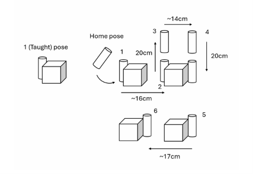

UR5e Autonomous Push-and-Place Manipulation
A UR5e arm, taught a start pose in freedrive mode, autonomously pushes a foam cube about 16 cm along a straight line and back, comparing inverse-kinematics and resolved-rate Cartesian control on the real robot through ROS 2 and MATLAB RTDE.

Overview
At a glance
The task requires the UR5e robot to push a foam cube approximately 16 cm along a straight line from a taught start pose ... and then automatically execute a return push without manually specifying a second target.
Objective
The task
Objectives: achieve accurate world-frame Cartesian motion, evaluate different Cartesian control strategies, and ensure safe and robust execution on a real robotic system.
- Autonomous push-and-place task: push the cube along a straight line, then execute the return push automatically.
- Precision evaluation task: assess near-contact motion by approaching multiple surfaces of a foam cube without visible deformation.
Approach
How it was built
Controls and robotics
Vishek with Pattharaphol Chainiwattana · IK solution filter designed by Vishek
- Implemented and compared inverse-kinematics (IK) based and resolved-rate (RR) Cartesian control.
- Robot motion is planned in SE(3) with a fixed world-frame pushing direction, and safety constraints such as joint limits and collision avoidance are enforced.
- The initial pose is taught in freedrive mode.
- IK uses the course-provided analytical IK solver, which returns up to eight joint-space solutions; Vishek designed the filter that selects among them (see Implementation).
- RR control uses the approach developed in the course's Lab 3.
Software
- ROS 2: IK and RR control, in simulation and on hardware.
- MATLAB RTDE: RR control with direct execution on the robot.
- All project code was written in MATLAB, as scripts and functions for the RR controller, forward and inverse kinematics, and error reporting, run against the robot over ROS 2 or RTDE.
Testing
- RViz simulation (rechecked by Vishek) verified forward kinematics, inverse kinematics and the RR controller in a risk-free environment before running on the UR5e.
- Position (d_R3) and orientation (d_SO3) errors were computed at each waypoint on the real robot.
- After each IK motion, the actual joint angles are read back from the robot and compared against the commanded values.
- Precision evaluation on the real robot: near-contact poses on the cube's top and an adjacent side, using IK control.
System
Setup and trajectory
Hardware
- UR5e manipulator on a whiteboard surface, with a foam cube as the object.
- A picking gripper mounted at the tool flange serves as the pushing end-effector.
Planned trajectory
The figure shows the robot's planned trajectory: from the taught start pose, a straight-line push of the cube, a lift, a move to the far side of the cube, and a return push back toward the start.



Implementation
Control laws
Resolved-rate update law
- The actual pause between control updates was 0.05 s in ROS and 0.1 s in RTDE, indicating a higher communication and execution latency in RTDE.
IK solution selection · designed by Vishek
-
For a desired pose , compute all IK solutions
Step 1
-
Pure translation: keep a candidate only if it lies within a bounded neighbourhood of the previous configuration
Step 2The threshold assumes the robot translates less than 30 cm from the previous position. The remaining solution is used: .
-
Rotation plus translation (precision task): choose the candidate that minimizes the 2-norm of the joint change
Step 3
Each joint configuration is commanded with a fixed segment duration of tseg = 20 s.
Results
Measured accuracy: IK vs RR
Measured (real robot)
- IK control was more accurate than RR. Position errors with IK stayed at the micrometre level, while both RR implementations ended about 5–10 mm from the target at every waypoint.
- Measured IK position error (d_R3) was 1.485×10−3 to 7.12×10−3 mm across the six waypoints on the real robot.
- Errors were computed at each waypoint as position (d_R3, mm) and orientation (d_SO3, rad) error between the desired and actual poses.
Precision task
- From about 10 cm above, the robot returned to a taught top-surface pose, achieving near-contact with the cube surface without visibly compressing it, then approached an adjacent side. The robot successfully executed all stages of this task.
Observed (not measured)
- Smoothness: IK control produced noticeably smoother joint motion; RR exhibited mild but visible jerking during transitions.
- Speed: IK reached target poses faster and maintained a consistent velocity profile; RR slowed down significantly as the end effector approached each target.
- ROS vs RTDE: ROS proved more reliable and responsive, with lower communication latency and faster debugging cycles. The latency difference is inferred from the required pause durations (0.05 s vs 0.1 s), not measured directly.
- Accurate straight-line Cartesian pushing.
Engineering challenges
Challenges and limitations
- Multiple IK solutions: the solver returns up to eight solutions, and not all are suitable for safe or smooth execution. This motivated the proximity filter.
- RR gain tuning: higher gains led to rough and jerky motion, while lower gains improved smoothness but reduced responsiveness. A gain of 1.5, combined with manual adjustment of the time step, gave acceptable performance without convergence failures.
- RR convergence: deliberately low linear and angular velocity thresholds improved precision near the goal but slowed convergence.
- RTDE delays: since the ROS and RTDE control logic was otherwise identical, diagnosing the delays was initially challenging. The cause was traced to timing and synchronization constraints inherent in RTDE communication, which required conservative timing. RTDE was still effective for rapid prototyping, through direct execution and quick visual checks.
- Limitation: RR relied on manually tuned pause durations and step times, which made large motions jerky and small near-target motions excessively slow.
- Adaptive step sizing, velocity scaling, time-optimal trajectory generation, and automatic pause durations based on joint velocity limits or distance to goal.
Takeaways
What it showed
IK-based control was easier to deploy and yielded smoother and faster motion with minimal tuning, whereas RR control offered fine-grained control over motion behavior at the cost of increased parameter sensitivity and tuning effort.
- For final system development, ROS offered superior scalability, debuggability, and reliability due to its integrated simulation, visualization, and communication infrastructure.
- Careful control strategy selection, environment choice, and tuning are critical for safe and efficient real-world robotic manipulation.
Team
Credits
- Vishek MasaliaRobotics Control Engineer. Controls, ROS 2 and MATLAB RTDE implementation, hardware execution, and the precision-evaluation (near-contact) task, with Pattharaphol Chainiwattana. Designed the IK solution filter and rechecked the simulation.
- Pattharaphol ChainiwattanaControls, ROS 2 and MATLAB RTDE implementation, hardware execution, and the precision-evaluation (near-contact) task, with Vishek Masalia.
Course project. The analytical IK solver and the Lab 3 resolved-rate approach were provided by the course; the IK solution-selection filter is Vishek's work.